1. Riktad vinkel
I MaA 3 arbetade vi med vinklar och geometri. Vi börjar nu denna kurs med att fördjupa oss i vinkelbegreppet.
För att vi skall ha en vinkel skall vi ha två linjer som skär varandra eller vinkeln mellan två strålar som utgår från samma punkt. Den gemensamma punkten kallas för vinkelns spets och linjerna eller strålarna för vinkelns ben eller sidor.
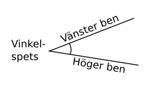
Beroende på om vi vrider vinkelbenen åt medurs eller moturs får vi riktade vinklar. Vrider vi moturs får vi en positiv vinkel, vrider vi medurs är vinkeln negativ.
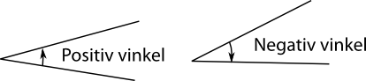Nedan härleder vi fram sambandet mellan båglängd och radie för en vinkel.
Förhållandet mellan båglängden och radien för en vinkel är konstant och förhållandet berättar för oss storleken på vinkeln. Denna storlek har enheten radianer.
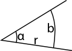
\( \alpha = \dfrac{b}{r} \)
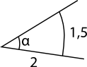
Lösning
Vi får vinkeln som \( \alpha=\dfrac{b}{r}=\dfrac{1,5}{2} \text{ rad} = 0,75 \text{ rad} \).
Lösning
En rak vinkel har storleken \( 180^{\circ} \). Det är också vinkeln för en halv cirkel. Vi utgår från den och får \( \dfrac{\dfrac{2\pi r}{2}}{r} = \dfrac{2\pi r}{2r} = \pi \text{ radianer} \)
Vi har följande samband mellan radianer och grader, \( \pi \text{ rad}=180^{\circ} \)
Lösning
Eftersom \( \pi \text{ rad} = 180^{\circ} \) så bildar vi förhållandet \( \dfrac{x}{\pi} = \dfrac{140^{\circ}}{180^{\circ}} \) som ger \( x = \dfrac{140^{\circ}}{180^{\circ}}\cdot \pi = 2,44 \) rad.
Lösning
Vi bildar förhållandet\( \dfrac{x}{180^{\circ}}=\dfrac{2 \text{ rad}}{\pi \text{ rad}} \) som ger\( \dfrac{2 \text{ rad}}{\pi \text{ rad}}\cdot 180^{\circ} = 144,59 \approx 144,6^{\circ} \).
Uppgifter
- Är följande vinklar positiva eller negativa?
- 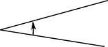
- 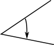
- 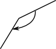
- 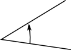
- 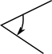
De som öppnar sig moturs är positiva, de som öppnar sig medurs negativa.
- Positiv
- Negativ
- Negativ
- Positiv
- Negativ
- Bestäm storleken av vinkeln i figuren i radianer.
- 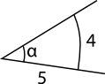
\( \alpha = \dfrac{b}{r}=\dfrac{4}{5}= 0,8 \text{ rad} \).

\( \alpha = \dfrac{b}{r}=\dfrac{5}{2}= 2,5 \text{ rad} \).
- 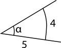
- Bestäm storleken av vinkeln i figuren i grader genom att först bestämma storleken i radianer.
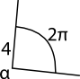
\( \alpha=\dfrac{2\pi}{4} \text{ radianer}=\dfrac{\pi}{2} \text{ radianer} = 90^{\circ} \).
- Kombinera storleken av vinkel i grader med storleken av vinkeln i radianer.
Vinkeln i grader:
\( 270^{\circ} \)\( 90^{\circ} \)\( 0^{\circ} \)\( 180^{\circ} \)\( 360^{\circ} \)Vinkeln i radianer:
\( 0 \) radianer\( \dfrac{\pi}{2} \) radianer\( \pi \) radianer\( \dfrac{3\pi}{2} \) radianer\( 2\pi \) radianer\( 0^{\circ} = 0 \text{ radianer} \)
\( 90^{\circ} =\dfrac{\pi}{2} \text{ radianer} \)
\( 180^{\circ} =\pi \text{ radianer} \)
\(270^{\circ} =\dfrac{3\pi}{2} \text{ radianer}\)
\( 360^{\circ} =2\pi \text{ radianer} \)
- Kombinera storleken av vinkel i grader med storleken av vinkeln i radianer.
Vinkeln i grader:
\( 30^{\circ} \)\( 90^{\circ} \)\( 450^{\circ} \)\( 180^{\circ} \)\( 45^{\circ} \)\( 540^{\circ} \)\( 60^{\circ} \)Vinkeln i radianer:
\( \dfrac{\pi}{6} \) radianer\( \dfrac{\pi}{3} \) radianer\( \dfrac{\pi}{2} \) radianer\( \pi \) radianer\( \dfrac{\pi}{4} \) radianer\( \dfrac{5\pi}{4} \) radianer\( 3\pi \) radianer\( 30^{\circ} = \dfrac{\pi}{6} \text{ radianer} \)
\( 45^{\circ} =\dfrac{\pi}{4} \text{ radianer} \)
\( 60^{\circ} =\dfrac{\pi}{3} \text{ radianer} \)
\( 90^{\circ} =\dfrac{\pi}{2} \text{ radianer} \)
\( 180^{\circ} =\pi \text{ radianer} \)
\( 450^{\circ} =\dfrac{5\pi}{4} \text{ radianer} \)
\( 540^{\circ} =3\pi \text{ radianer} \)
- Rita följande riktade vinklar \( \pm\dfrac{\pi}{2}, \pm\pi, \pm\dfrac{3\pi}{2} \) och \( \pm 2\pi \) i olika eller samma koordinatsystem. Placera ena vinkelbenet på x-axeln och vinkelspetsen i origo.
Det kan se snurrigt it. Dina vinklar blir spegelbilder av varandra.